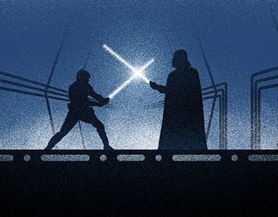

Darth Vader no fue planeado como padre de Luke
Una de las revelaciones más impactantes de la historia del cine —"Yo soy tu padre"— no estaba en los planes originales. En el primer borrador de El Imperio Contraataca (Episodio V), Darth Vader era simplemente el villano principal, sin ninguna conexión familiar con Luke Skywalker. Fue durante las reescrituras del guion que George Lucas introdujo esta sorprendente conexión.
La decisión se tomó en parte para añadir una dimensión más oscura y personal al conflicto. En lugar de ser solo una historia de héroes contra villanos, se convirtió en una tragedia familiar con raíces emocionales más profundas. Este cambio redefinió la saga y elevó su narrativa a algo más complejo y mítico.
La frase se convirtió en una de las más icónicas de todos los tiempos, aunque curiosamente, en el set no se decía la línea real para evitar filtraciones. Incluso los actores no sabían del giro hasta el estreno. Este giro narrativo inesperado cambió por completo cómo se cuentan las historias en el cine de ciencia ficción.
← Volver a curiosidades de Star wars